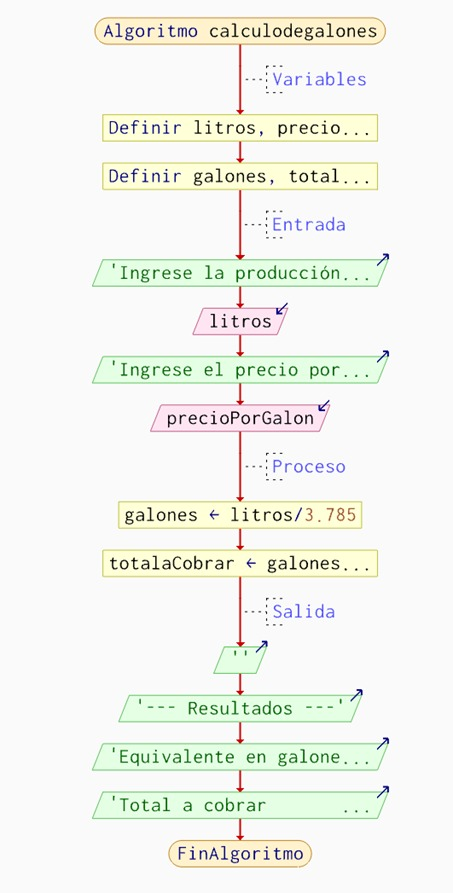
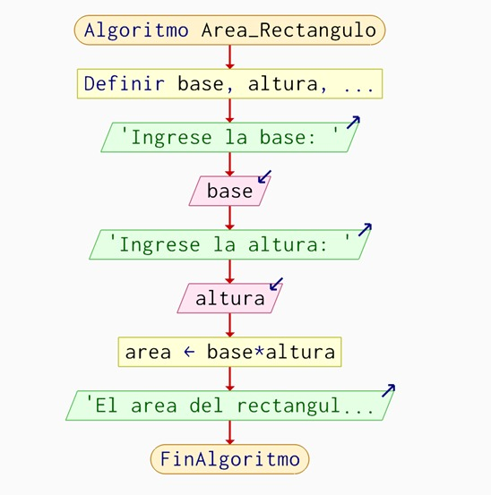
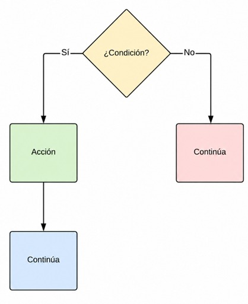
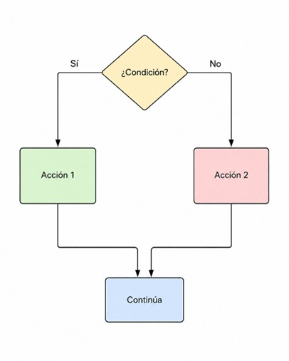
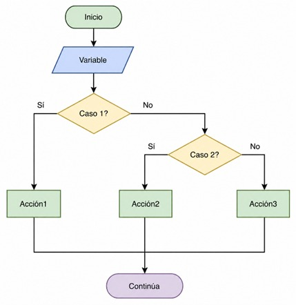
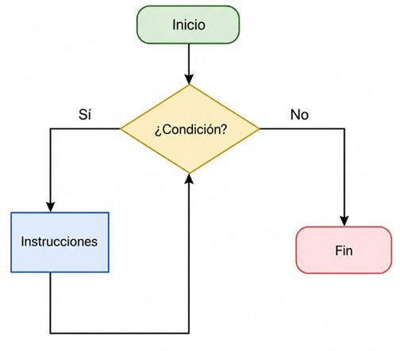
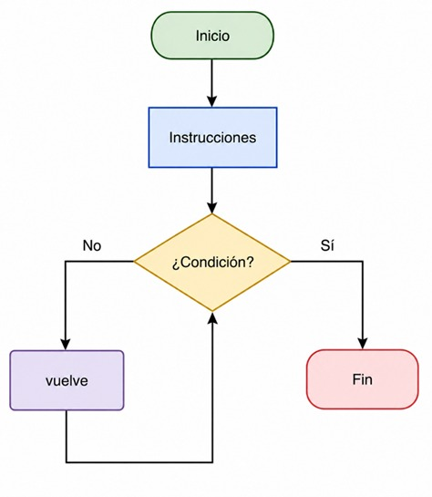
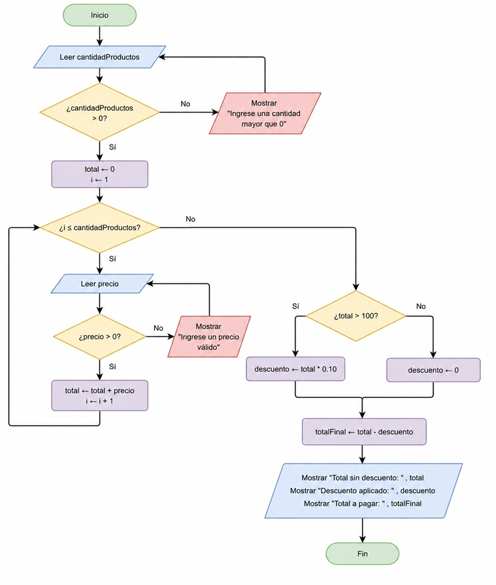
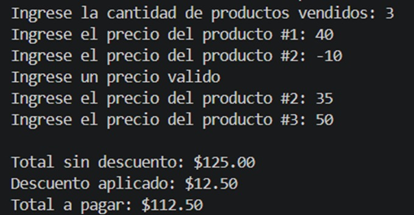

Exploración y uso de herramientas digitales para pseudocódigo y diagramas de flujo
Contenidos
Algoritmo
Un algoritmo es un conjunto ordenado, finito y definido de instrucciones o reglas paso a paso que permiten solucionar un problema, realizar un cómputo o procesar datos. Funciona recibiendo datos de entrada (input), procesándolos mediante reglas lógicas y produciendo un resultado final (output). Son la base de la programación y la tecnología moderna.
Realice un algoritmo llamado “calculodegalones” que tiene como propósito convertir la producción diaria ingresada en litros a su equivalente en galones y, a partir de ello, calcular el monto total a cobrar según un precio por galón. Primero se definen las variables necesarias para almacenar los datos de entrada y los resultados, luego se solicita al usuario que ingrese la cantidad de litros producidos y el precio por galón. Posteriormente, en el proceso, se realiza la conversión de litros a galones utilizando el factor 3.785 y se calcula el total a pagar multiplicando los galones obtenidos por el precio ingresado. Finalmente, el algoritmo muestra en pantalla los resultados, es decir, la cantidad equivalente en galones y el total a cobrar, permitiendo así obtener de forma sencilla tanto la conversión de unidades como el cálculo económico correspondiente.
Pseudocódigo
El pseudocódigo es una forma de representar algoritmos y la lógica de programación utilizando una mezcla de lenguaje natural (español) y estructuras de código, sin las reglas sintácticas estrictas de un lenguaje real. Sirve como borrador para planificar programas, enfocándose en el flujo lógico antes de la codificación.
En este caso presentamos el algoritmo de “calculodegalones”:
Algoritmo calculodegalones
Definir litros, precioPorGalon Como Real
Definir galones, totalACobrar Como Real
Escribir "Ingrese la producción del día (en litros):"
Leer litros
Escribir "Ingrese el precio por galón ($):"
Leer precioPorGalon
galones <- litros / 3.785
totalACobrar <- galones * precioPorGalon
Escribir "----- Resultados -----"
Escribir "Equivalente en galones: ", galones, " galones"
Escribir "Total a cobrar: $", totalACobrar
FinAlgoritmo
Diagrama de flujo
Un diagrama de flujo (o flujograma) es una representación gráfica de un proceso, algoritmo o sistema, que utiliza símbolos estandarizados conectados por flechas para secuenciar pasos. Permite visualizar de forma clara y ordenada acciones, decisiones y el flujo de información desde el inicio hasta el final de una tarea.

Diagrama de flujo del algoritmo calculodegalones.
Prueba de escritorio
Una prueba de escritorio es la simulación manual y paso a paso de un algoritmo, pseudocódigo o código, utilizando papel y lápiz (o una tabla) para rastrear los valores de las variables y verificar la lógica sin ejecutarlo en la computadora. Es fundamental para detectar errores tempranos, validar la funcionalidad y entender el flujo del programa.
Paso
litros
precioPorGalon
galones
totalaCobrar
Entrada
15
5
Conversión
15
5
3.96
Cálculo
15
5
3.96
19.80
Paso
litros
precioPorGalon
galones
totalaCobrar
Entrada
50
3.2
Conversión
50
3.2
13.21
Cálculo
50
3.2
13.21
42.27
Lenguajes de programación
Los lenguajes de programación son sistemas formales utilizados para dar instrucciones a las computadoras, divididos principalmente en alto nivel (cercanos al humano) y bajo nivel (cercanos al hardware). Los más populares y utilizados incluyen Python (versátil), JavaScript (desarrollo web), Java (empresarial), C# (videojuegos) y C/C++ (rendimiento).
En clase usamos el lenguaje C en Visual Studio porque te permite entender las bases fundamentales de la programación, como el manejo de memoria, estructuras de control y lógica computacional de forma clara y directa. C es un lenguaje de bajo nivel comparado con otros, así que te obliga a comprender cómo funciona realmente el computador, lo cual fortalece tus habilidades para aprender otros lenguajes más fácilmente. Además, Visual Studio ofrece herramientas como depuración paso a paso y autocompletado que facilitan el aprendizaje, ayudándote a detectar errores y mejorar tu código de manera más rápida y profesional.
Mi pseudocódigo transformado en lenguaje C:
#include <stdio.h>
int main() {
float litros, precioPorGalon;
float galones, totalACobrar;
printf("Ingrese la producción del día (en litros): ");
scanf("%f", &litros);
printf("Ingrese el precio por galón ($): ");
scanf("%f", &precioPorGalon);
galones = litros / 3.785;
totalACobrar = galones * precioPorGalon;
printf("\n----- Resultados -----\n");
printf("Equivalente en galones: %.2f\n", galones);
printf("Total a cobrar: $ %.2f\n", totalACobrar);
return 0;
}
Programación por bloques
La programación por bloques es un método visual para crear software arrastrando y encajando piezas gráficas (bloques) que representan comandos, eliminando la necesidad de escribir sintaxis compleja. Es ideal para principiantes y niños, ya que permite aprender lógica de programación secuencial de forma intuitiva, lúdica y sin errores de escritura.
Ejercicio con estructura secuencial (lenguaje C en Visual Studio)
Planteamiento del problema
Desarrollar un programa en lenguaje C que permita ingresar la base y la altura de un rectángulo, y calcule su área.
Análisis del problema
Datos de entrada: Base (b), Altura (h).
Proceso: Área = base × altura.
Salida: Área del rectángulo.
Diseño del algoritmo
Pseudocódigo:
Algoritmo Area_Rectangulo
Definir base, altura, area Como Real
Escribir "Ingrese la base:"
Leer base
Escribir "Ingrese la altura:"
Leer altura
area <- base * altura
Escribir "El area del rectangulo es: ", area
FinAlgoritmo
Diagrama de flujo:

Diagrama de flujo del ejercicio de área del rectángulo.
Codificación (C en Visual Studio)
#include <stdio.h>
int main() {
float base, altura, area;
printf("Ingrese la base: ");
scanf("%f", &base);
printf("Ingrese la altura: ");
scanf("%f", &altura);
area = base * altura;
printf("El area del rectangulo es: %.2f", area);
return 0;
}
Validación (Prueba de escritorio)
Base
Altura
Cálculo
Área
5
3
5 × 3
15
2.5
4
2.5 × 4
10
Principales dificultades de los contenidos
Durante el desarrollo de este ejercicio en C, una de las principales dificultades fue comprender cómo funcionan las variables, ya que es necesario entender que cada variable almacena un tipo de dato específico y debe ser declarada correctamente antes de usarse. También se presentó cierta dificultad al utilizar la función scanf, especialmente en el uso del símbolo &, el cual es obligatorio para indicar la dirección de memoria donde se guardará el valor ingresado por el usuario. Finalmente, otro aspecto importante fue diferenciar entre los tipos de datos como int y float, ya que elegir el tipo correcto es clave para evitar errores en los cálculos, sobre todo cuando se trabajan con números decimales.
Reflexión crítica en la aplicación
La estructura secuencial es considerada la más sencilla dentro de la programación porque las instrucciones se ejecutan una tras otra en un orden establecido, sin tomar decisiones ni repetir procesos. Este tipo de ejercicios es muy útil para desarrollar la lógica básica de programación, ya que permite enfocarse en la correcta comprensión de las variables, operaciones y entrada/salida de datos. Además, sirve como base fundamental antes de avanzar hacia estructuras más complejas como las condicionales y los ciclos, que requieren un mayor nivel de razonamiento y control del flujo del programa.
Unidad 2
Aplicación de estructuras condicionales y repetitivas en el diseño
Contenidos
Estructuras condicionales
Las estructuras condicionales permiten que un programa tome decisiones según una condición. Es decir, el programa evalúa si algo es verdadero o falso y, dependiendo del resultado, ejecuta una acción.
Tipos principales
1. Condicional simple
Se usa cuando solo se ejecuta una acción si la condición se cumple.
Si condición Entonces
Acción
FinSi

Diagrama de flujo: condicional simple.
2. Condicional doble
Se usa cuando hay una acción si la condición es verdadera y otra si es falsa.
Si condición Entonces
Acción 1
Sino
Acción 2
FinSi

Diagrama de flujo: condicional doble.
3. Condicional múltiple
Se usa cuando existen varias condiciones o varios casos posibles.
Según variable Hacer
Caso 1:
Acción 1
Caso 2:
Acción 2
De Otro Modo:
Acción 3
FinSegún

Diagrama de flujo: condicional múltiple.
Estructuras repetitivas
Las estructuras repetitivas permiten ejecutar una o varias instrucciones varias veces, mientras se cumpla una condición o hasta completar un número de repeticiones.
1. Mientras
Se usa cuando primero se evalúa la condición y luego se ejecutan las instrucciones.
Mientras condición Hacer
Instrucciones
FinMientras

Diagrama de flujo: estructura Mientras.
2. Repetir...Hasta Que
Se ejecuta al menos una vez y luego evalúa la condición.
Repetir
Instrucciones
Hasta Que condición

Diagrama de flujo: estructura Repetir...Hasta Que.
3. Para
Se usa cuando se conoce la cantidad de repeticiones.
Para contador <- valorInicial Hasta valorFinal Hacer
Instrucciones
FinPara
Diagrama de flujo: estructura Para.
Ejercicio: Control de ventas en una tienda
Planteamiento del problema
Se desea crear un programa que permita ingresar la cantidad de productos vendidos en una tienda. Por cada producto se debe ingresar su precio. Si el precio es menor o igual a 0, el programa debe mostrar un mensaje de error y volver a pedir el dato.
Al final, el programa debe calcular el total de la venta. Si el total supera los $100, se aplica un descuento del 10%. Caso contrario, no se aplica descuento.
Análisis del problema
Elemento
Descripción
Datos de entrada
Cantidad de productos vendidos, precio de cada producto.
Proceso
1. Solicitar la cantidad de productos. 2. Validar que los productos sean mayores que 0. 3. Solicitar el precio de cada producto. 4. Validar que cada precio sea mayor que 0. 5. Acumular el total de las ventas. 6. Verificar si el total supera los $100. 7. Si supera los $100, calcular un descuento del 10%; caso contrario, descuento igual a 0. 8. Calcular el total final a pagar.
Datos de salida
Total de la venta, descuento aplicado y total final a pagar.
Diseño del algoritmo (Diagrama de Flujo)

Diagrama de flujo del control de ventas en una tienda.
Codificación
#include <stdio.h>
int main() {
int cantidadProductos, i;
float precio, total = 0;
float descuento, totalFinal;
// Ingreso y validación de la cantidad de productos
do {
printf("Ingrese la cantidad de productos vendidos: ");
scanf("%i", &cantidadProductos);
if (cantidadProductos <= 0) {
printf("Ingrese una cantidad mayor que 0\n");
}
} while (cantidadProductos <= 0);
// Ingreso y validación de precios
for (i = 1; i <= cantidadProductos; i++) {
do {
printf("Ingrese el precio del producto #%i: ", i);
scanf("%f", &precio);
if (precio <= 0) {
printf("Ingrese un precio valido\n");
}
} while (precio <= 0);
total = total + precio;
}
// Aplicación del descuento
if (total > 100) {
descuento = total * 0.10;
} else {
descuento = 0;
}
// Cálculo del total final
totalFinal = total - descuento;
// Resultados
printf("\nTotal sin descuento: $%.2f\n", total);
printf("Descuento aplicado: $%.2f\n", descuento);
printf("Total a pagar: $%.2f\n", totalFinal);
return 0;
}
Paso
Dato ingresado
Validación
Total acumulado
Cantidad de productos
3
Válido
0
Producto #1
40
Válido
40
Producto #2
-10
Inválido, vuelve a pedir
40
Producto #2
35
Válido
75
Producto #3
50
Válido
125
Concepto
Valor
Total de venta
$125.00
¿Total > 100?
Sí
Descuento (10%)
$12.50
Total a pagar
$112.50

Resultado del programa, dificultades y reflexión crítica.
Principales dificultades
Una de las principales dificultades fue identificar correctamente cuándo usar una estructura condicional y cuándo usar una estructura repetitiva. También fue necesario validar los datos de entrada, ya que el programa no debe aceptar cantidades o precios menores o iguales a cero. Otra dificultad fue acumular correctamente el total de la venta dentro del ciclo, porque si esta operación se coloca fuera del for, el programa no sumaría todos los productos.
Reflexión crítica
La aplicación de estructuras condicionales y repetitivas permite resolver problemas de manera más ordenada y eficiente. En este ejercicio, las estructuras repetitivas ayudaron a ingresar varios productos sin repetir muchas veces el mismo código, mientras que las condicionales permitieron validar los datos y aplicar el descuento según el total de la compra. Esto demuestra que antes de programar es importante analizar el problema y diseñar el algoritmo, ya que así se reducen errores y se comprende mejor la lógica del programa.
Conclusión
La elaboración de este portafolio digital me permitió reforzar y consolidar los conocimientos adquiridos sobre las estructuras condicionales y repetitivas. A través del desarrollo de los contenidos teóricos, diagramas de flujo, pseudocódigos y ejercicios prácticos, comprendí cómo estas estructuras son fundamentales para la toma de decisiones y la automatización de procesos dentro de un programa. Además, la implementación del ejercicio de control de ventas me ayudó a aplicar estos conceptos en una situación real, fortaleciendo mi capacidad de análisis, diseño y codificación de algoritmos. Finalmente, este portafolio no solo permitió organizar las evidencias de aprendizaje de la unidad, sino también reflexionar sobre los avances obtenidos y la importancia de una correcta planificación antes de desarrollar un programa.
Bibliografía
L. Joyanes Aguilar, Fundamentos de Programación: Algoritmos, Estructuras de Datos y Objetos, 5.ª ed. Madrid, España: McGraw-Hill, 2020.
J. Pérez López, Programación en C: Metodología, Algoritmos y Estructuras de Datos, Madrid, España: RA-MA Editorial, 2021.
A. Ceballos Sierra, Curso de Programación en C, 5.ª ed. Madrid, España: Alfaomega Grupo Editor, 2022.
Declaración de uso de Inteligencia Artificial
Para la elaboración de este portafolio digital se utilizó inteligencia artificial como herramienta de apoyo en la organización de contenidos, mejora de la redacción, corrección de aspectos de formato y estructuración de la información presentada. Los conceptos, ejercicios, análisis, diagramas, pseudocódigos y evidencias incluidos fueron revisados, adaptados y validados por mí antes de su incorporación al trabajo final.
El uso de esta herramienta tuvo como finalidad facilitar la presentación y organización del portafolio, sin sustituir el proceso de aprendizaje, comprensión y desarrollo de las actividades académicas realizadas durante la asignatura.
PDF original
Se incluye el archivo original dentro del repositorio para consulta y descarga.